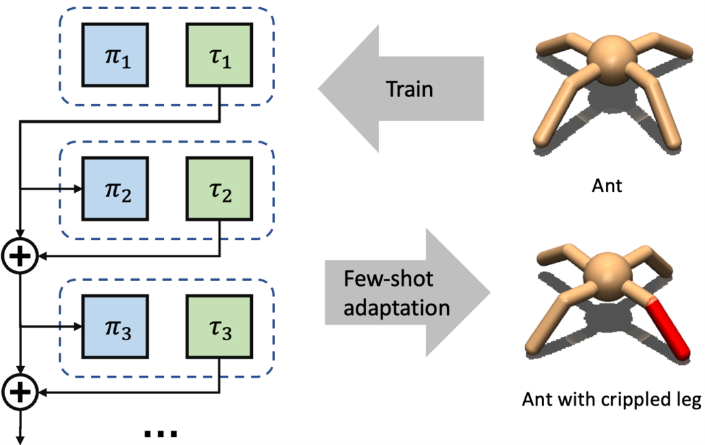
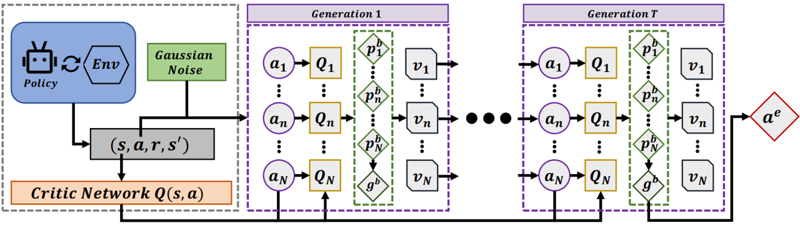
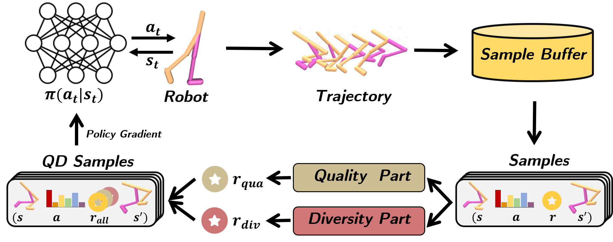

Yan Ma 马 琰
mayan20 [at] fudan [dot] edu [dot] cn
Ph.D. Student
Department of Computer Science
Fudan University
I am an incoming first-year Ph.D. student from the Department of Computer Science at Fudan University, advised by Prof. Pengfei Liu and Prof. Qiao Yu. Previously, I earned my master's degree from Fudan University in 2023, under the guidance of Prof. Wei Li. Prior to that, I was an undergraduate student of Computer Science at Dalian University of Technology from 2016 to 2020.
CV / GitHub / Google Scholar / Zhihu
Research
My research interest focuses on enhancing the capabilities of foundation models in the field of science disciplines, such as college mathematics, and addressing complex reasoning problems. Additionally, I am highly interested in the areas of reinforcement learning and simulated robotics. I firmly believe that the convergence of these three fascinating fields will pave the way towards intelligence.
Education / Experience
- 2023.9-Now: Ph.D. student in Computer Science, Fudan University
- 2020.9-2023.6: M.S. in Computer Application Technology, Fudan University
- 2016.9-2020.6: B.Eng. in Computer Science, Dalian University of Technology
- 2023.7-Now: NLP Research intern at PJ Lab, Shanghai
- 2022.7-2022.9: RL Research intern at Netease Games AI Laboratory, Shanghai
Publications
-
Open-Ended Diverse Solution Discovery with Regulated Behavior Patterns for Cross-Domain Adaptation
Kang Xu, Yan Ma, Bingsheng Wei, Wei Li
Association for the Advancement of Artificial Intelligence (AAAI), 2023 -
Evolutionary Action Selection for Gradient-Based Policy Learning
Yan Ma, Tianxing Liu, Bingsheng Wei, Yi Liu, Kang Xu, Wei Li
International Conference on Neural Information Processing (ICONIP), 2022 (Oral)
Thesis
-
Quality-Diversity Reinforcement Learning for Motion Control Tasks
Yan Ma
Master Thesis of Fudan University, 2023 -
 Dotfiles: Configuration files for Linux
Dotfiles: Configuration files for Linux
My linux configuration dotfiles (including neovim/astronvim, tmux, bash, jupyter, etc). I am a guy living in terminal, and enjoy using commands to control everything. -
 RL Plot: Reinforcement Learning Plot Library
RL Plot: Reinforcement Learning Plot Library
An easy to use and highly encapsulated RL plot library (including basic error bar lineplot and a wrapper to rliable).